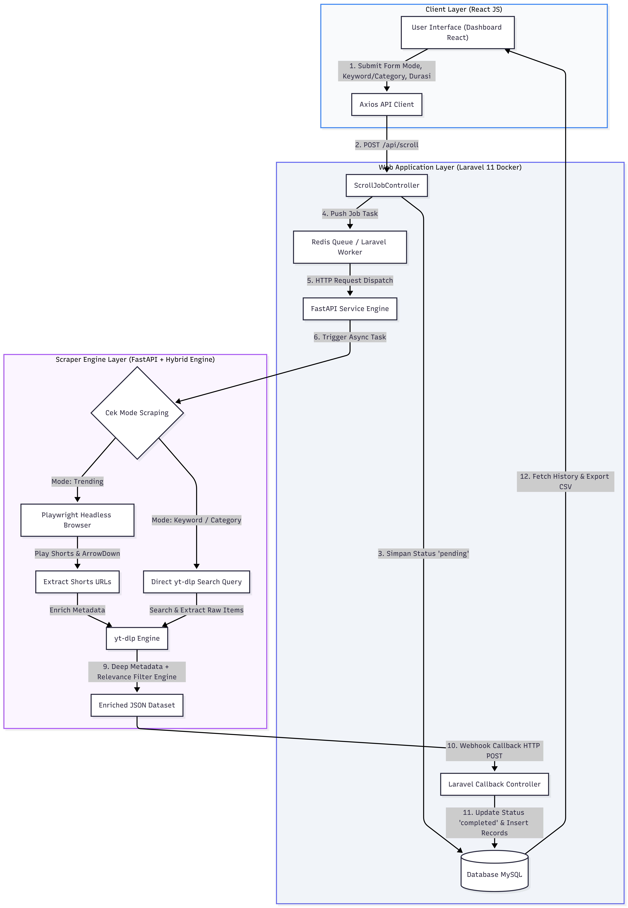
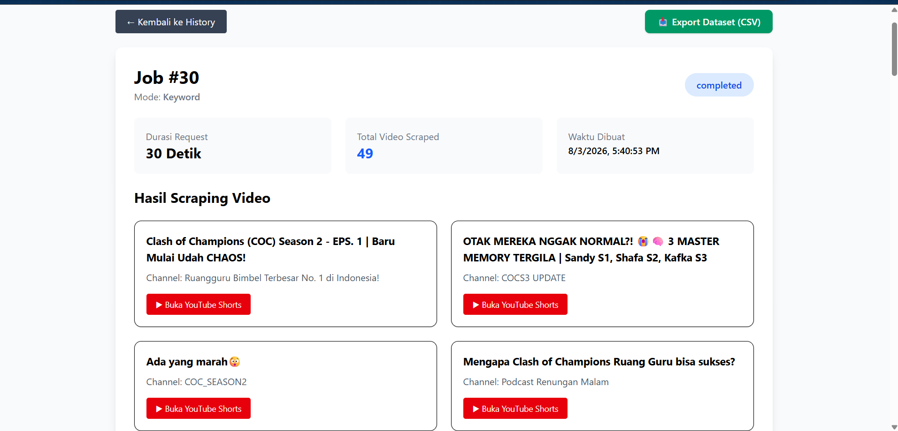

Situation (Business Background)
Data collection is often the biggest bottleneck in Machine Learning,
Natural Language Processing (NLP), and Data Analytics projects.
Manually gathering video metadata from platforms such as YouTube is
time-consuming, inconsistent, and difficult to scale, especially when
the dataset needs to cover multiple categories, trending topics, or
specific keywords with reliable, structured metadata.
This project was developed to solve that challenge by building an
automation pipeline that collects, enriches, and structures YouTube
Shorts data into a clean, analytics-ready dataset, without requiring
any manual data gathering.
Task (Engineering Challenge)
The objective of this project was to design and build an end-to-end,
scalable data pipeline capable of automatically scraping YouTube
Shorts through multiple search strategies, enriching the results with
complete metadata, tracking scraping jobs in real time, and exporting
the final dataset in a format ready for analysis. My responsibilities
covered the full system architecture, from the scraping engine and
backend API to the frontend interface and containerized deployment.
Action (System Design & Development)
The system was built as a multi-service, Dockerized application
combining a Python scraping engine, a Laravel backend, and a React
frontend.

1. Intelligence Scraper Engine (Python / FastAPI)
-
Built a FastAPI service that combines two scraping strategies:
Playwright for headless browser automation and infinite scrolling
on Trending mode, and yt-dlp for high-precision extraction on
Keyword Search and Category Search modes.
-
Implemented relevance filtering that matches search queries and
category taxonomies against video titles, descriptions, channel
names, and hashtags.
-
Designed category-based taxonomy keywords for domains such as
Education, Technology, Food, Gaming, and Finance to improve
search precision.
2. Web Application & Queue Layer (Laravel 11)
-
Developed a REST API secured with JWT authentication to manage
scraping jobs, users, and dataset requests.
-
Implemented a Redis-backed message queue with Laravel Worker to
process scraping requests asynchronously without blocking the main
application.
-
Built a job lifecycle system that tracks each scraping request
through pending, processing, and completed states.
3. Frontend Interface (React.js)
-
Built an interactive interface using React.js and Axios to manage
scraping jobs, monitor progress, and visualize results.
-
Designed a straightforward export flow that allows users to
download completed datasets directly in CSV or Excel format.
4. Infrastructure & Deployment
-
Containerized every service (frontend, backend, scraper engine,
and database) using Docker to ensure consistent behavior across
development and production environments.
-
Used MySQL for data persistence and job history tracking across
the platform.
Result (Impact & Outcomes)
The project successfully delivered a fully automated, scalable
pipeline that removes the manual bottleneck from YouTube data
collection and turns it into a repeatable, on-demand process.

-
Automated data collection across three modes: Trending Shorts,
Keyword Search, and Category Search.
-
Generated rich, analytics-ready datasets containing Video ID,
Title, Channel, Channel ID, Description, Views, Likes, Comments,
Duration, Published Date, Language, and Category Tag.
-
Enabled real-time monitoring of scraping jobs through an
asynchronous queue system, improving reliability for long-running
scraping tasks.
-
Provided export-ready datasets in CSV/Excel format, ready to
support EDA, dashboard visualization, sentiment analysis, topic
modeling, and Machine Learning or Deep Learning model training.
This project demonstrates practical, end-to-end experience across
the full data engineering stack, from scraping architecture and
asynchronous backend processing to frontend design and containerized
deployment. It reflects an approach to building not just scripts,
but reliable, production-ready data pipelines.
Technologies & Tools Used
React.js
Axios
Laravel 11
JWT Authentication
REST API
Redis
Laravel Worker
Python
FastAPI
Playwright
yt-dlp
MySQL
Docker